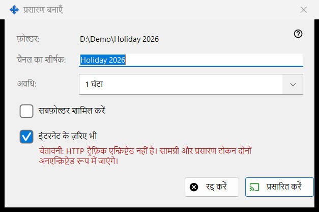
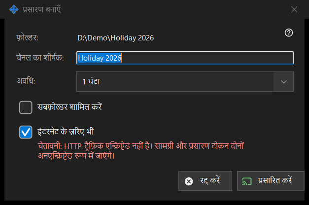

प्रसारण बनाएँ
यह किस लिए है
एक प्रसारण को बनाने से पहले तय करती है: उसका शीर्षक, वह कितने समय तक रहेगा और क्या वह स्थानीय नेटवर्क से बाहर तक पहुँचेगा। यह प्रसारण विंडो में चुनी गई फ़ाइल या फ़ोल्डर के लिए प्रसारण बनाएँ.. से खुलती है। जब तक आप प्रसारित करें नहीं दबाते, कुछ बनाया या भेजा नहीं जाता।


इस क्रम में
- पहली पंक्ति में पथ जाँचें (फ़ोल्डर: या फ़ाइल:)।
- चैनल का शीर्षक: बदलें; यह फ़ोल्डर या फ़ाइल के नाम से शुरू होता है।
- अवधि: चुनें।
- फ़ोल्डर के लिए, ज़रूरत हो तो सबफ़ोल्डर शामिल करें पर निशान लगाएँ।
- इंटरनेट के ज़रिए भी को रखें या हटा दें।
- प्रसारित करें (Enter) या रद्द करें (Escape) दबाएँ।
तत्व
शीर्षक और अवधि
चैनल का शीर्षक वही है जो प्रसारण सूची दिखाती है। अवधि में 24 घंटे (डिफ़ॉल्ट), 1 घंटा, 7 दिन और रद्द होने तक मिलते हैं; रद्द होने तक की कोई अंतिम तारीख नहीं होती और वह तब तक रहता है जब तक आप उसे प्रसारण विंडो में रद्द नहीं कर देते।
सबफ़ोल्डर शामिल करें
केवल तब दिखता है जब लक्ष्य फ़ोल्डर हो, और डिफ़ॉल्ट रूप से बंद रहता है। यह तय करता है कि प्रसारित फ़ोल्डर के सबफ़ोल्डरों की फ़ाइलें शामिल होंगी या नहीं।
इंटरनेट के ज़रिए भी
यह चुना हुआ रहता है, जब तक साझाकरण सेटिंग्स निर्यात को केवल स्थानीय नेटवर्क पर न रखें। चुने होने पर लिंक में स्थानीय पते के साथ इस पीसी के IPv6 और पोर्ट-फ़ॉरवर्ड किए गए इंटरनेट पते भी होते हैं, यदि वे ज्ञात हों। इसे चुनने से अवधि 24 घंटे से 1 घंटे पर आ जाती है (आप वापस बदल सकते हैं) और एक लाल चेतावनी दिखती है: HTTP ट्रैफ़िक एन्क्रिप्टेड नहीं होता, इसलिए सामग्री और प्रसारण टोकन बिना एन्क्रिप्शन के जाते हैं। जिसके पास लिंक है, वह प्रसारण फ़ाइलों को तब तक पढ़ सकता है जब तक उसकी अवधि समाप्त न हो जाए या वह रद्द न हो जाए। प्रसारण को स्थानीय नेटवर्क के भीतर रखने के लिए बॉक्स से निशान हटा दें।
प्रसारित करें और रद्द करें
प्रसारित करें केवल आपके चुनाव प्रसारण विंडो को लौटाता है, जो फिर प्रसारण बनाती है और उसका लिंक कॉपी करती है। रद्द करें संवाद बंद कर देता है और कुछ नहीं बनाता।
प्रबंधक सेटिंग · SFTP साझाकरण सेटिंग · एक्सचेंज सर्वर सेटिंग